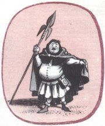
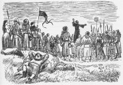

Almanach Ruch (1868)
Ruchovci
|
RUCHOVCI neboli NÁRODNÍ ŠKOLA
U pøíleitosti poloení základního kamene Národního divadla vyšel almanach Ruch (1868), kterı dal jméno jedné skupinì nastupující generace spisovatelù. Ruchovci kladli velkı dùraz na vlastenectví, oslavovali èeskou historii a hlásili se k myšlence slovanské vzájemnosti. Jejich program se proto oznaèuje jako národní škola.
Almanach Ruch nesl podtitul Básnì èeské omladiny a uspoøádal ho Josef Václav Sládek z pøíspìvkù, které se sešly na základì veøejné vızvy. Vıtìek z prodeje roèenky byl urèen na stavbu Národního divadla.
Kromì Sládka pøispìli do almanachu svımi básnìmi Svatopluk Èech, historik Jaroslav Goll, estetik Josef Durdík, Ladislav Quis, Bohuslav Èermák a øada ménì vıznamnıch autorù. Další roèenky vyšly v letech 1870 a 1873. Pøispìla do nich napøíklad Eliška Krásnohorská. Ruchovci rovnì publikovali ve svıch èasopisech Kvìty a Osvìta.
Mikoláš Aleš: Pobití Sasíkù pod Hrubou Skálou
|
Národní divadlo v Praze
Plakát k premiéøe Smetanovy opery Libuše, kterou se slavnostnì otvíralo Národní divadlo v roce 1881.
|
Svatopluk Èech (1846-1908)
Èechovım rodištìm byl Ostøedek u Benešova, pobıval v Obøíství u Mìlníka a zemøel v praské Troji.
Vystudoval práva, ale vìnoval se hlavnì redaktorské práci v èasopise Kvìty. Nejslavnìjší jsou jeho satirické prózy o panu Brouèkovi. Zfilmována byla povídka Jestøáb kontra Hrdlièka. Tìištì Èechovy tvorby tvoøí veršovaná epika – Adamité, Evropa, Slavie, Lešetínskı kováø, Ve stínu lípy, Dagmar, Václav z Michalovic atd. Širokého ohlasu dosáhla básníkova lyrika, obzvláštì Jitøní písnì a Písnì otroka. Na sklonku ivota napsal autobiografické Vzpomínky z cest.
Brouèkiády

Ruda Šváb: Matìj Brouèek

Èermák: Husité prùsmyk bránící
Èechova báseò Lešetínskı kováø propadla konfiskaci, dál ale kolovala mezi lidmi v opisech. Co úøadùm na básni vadilo?
|
Èechova lyrika
Èechova tvorba zahrnuje hlavnì básnì vlastenecké a politickou lyriku. Ve svıch verších brojil proti nesvobodì a bojoval za posílení národního sebevìdomí, ale jeho myšlenky byly natolik obecné, e si je brali za své pøedstavitelé nejrùznìjších názorovıch proudù a politickıch stran. To je typickı rys sbírek Jitøní písnì, Písnì otroka, Nové písnì nebo Menší básnì.
Brouèkiády Svatopluka Èecha
Praskı malomìšák Matìj Brouèek je hlavní postavou satirickıch próz Svatopluka Èecha Pravı vılet pana Brouèka do Mìsíce, Novı epochální vılet pana Brouèka, tentokrát do patnáctého století a Pestré cesty po Èechách, jejich druhı díl nese podtitul Matìj Brouèek na vıstavì.
Matìj Brouèek upøednostòuje vlastní pohodlí, dobré jídlo a pití. O jiné vìci se moc nezajímá. Mezi pøejemnìlımi mìsíèany pùsobí jako buran, v dobì husitskıch bouøí zase jako zbabìlec. Zároveò ale mùeme husity oznaèit za fanatiky, kteøí vradí své protivníky pouze kvùli drobnım odchylkám ve víøe. Obyvatelé Mìsíce jsou zase a pøíliš éteriètí, pøehnanì estétští a namyšlení...
Èechova epika
Nìkteré básnì Svatopluka Èecha musíme chápat jako alegorie. Napøíklad Evropa a Slavie jsou dvì lodi, které symbolizují osud evropskıch národù. Evropa veze do vyhnanství radikální a umírnìné revolucionáøe, jejich spory vedou k ztroskotání korábu a smrti všech pasaérù. Naopak rozhádaní pøedstavitelé rùznıch národù na lodi Slavie se nakonec dokáou dohodnout a z bouøe vyváznou...
Rámec cyklu veršovanıch povídek Ve stínu lípy tvoøí setkání vesnièanù, kteøí si krátí nedìlní odpoèinek vypravováním vlastních ivotních osudù. Postupnì mluví sedlák, krejèí, kantor, vyslouilı voják, hostinská, pojezdnı a šumaø. Idylické vyznìní umocòují slova mlynáøe, kterı v závìru opìvuje rodnou zem.
|
Svatopluk Èech byl oddanı vlastenec, hlásil se k myšlence slovanské vzájemnosti a neuznával napodobování zahranièních vzorù. Pro jeho umìleckou tvorbu je typickı sklon k idyliènosti, rétoriènosti a pøehnanému patosu.

Charakterizuj postavu Matìje Brouèka.
Jak se projevuje jeho povaha v konkrétních situacích?
Myslíš si, e pan Brouèek reprezentuje èeskou národní povahu?
Jací jsou obyvatelé Mìsíce podle Èecha?
Jaké obrazy se líbí tobì?
Co si myslíš o vegetariánství a vegetariánech?
Jací jsou obyvatelé Marsu?
Charakterizuj postavy husitù.
Najdi v textu ironické pasáe.
Co je satira?
Vyhledej pøesnı vıznam slov, kterım v ukázce nerozumíš.
Aleš: obálka Èechova èasopisu Kvìty
Co je alegorie?
Kdo byla Dagmar?
Co víš o Václavu z Michalovic?
Kde najdeš názvy dalších dìl Svatopluka Èecha?
|
Josef Václav Sládek
(1845-1912)
Sládkovım rodištìm byl Zbiroh u Berouna, zde také skonal. Po maturitì na gymnáziu cestoval dva roky po Severní Americe. ivil se tam jako uèitel, novináø i dìlník. Po návratu do Èech pracoval jako redaktor a uèil angliètinu.
Jeho první ena zemøela pøi porodu spolu s dítìtem. S druhou manelkou mìl dceru Helenku, pro kterou psal dìtskou poezii. Pøeloil vìtšinu Shakespearovıch dramat a Longfellowovu Píseò o Hiawatì. Jeho fejetony vyšly posmrtnì pod názvem Americké obrázky a jiná próza. Sládek uspoøádal almanach Ruch, ale pozdìji redigoval èasopis Lumír. Mùeme ho tudí zaøadit k ruchovcùm i lumírovcùm. Tematickı zábìr jeho tvorby byl velmi širokı. V Sládkovıch sbírkách se støídají básnì vlastenecké, reflexivní, pøírodní a intimní lyrika, balady i další ánry. Nìkteré z nich se doèkaly zhudebnìní.
Malı ètenáø
Sládek a mnozí další spisovatelé pøispívali do èasopisu Malı ètenáø (1882-1941), kterı byl urèen dìtem.
|
Sládkova poezie pro dospìlé
Sládek zúroèil americkı pobyt u v prvních básnickıch sbírkách Básnì a Jiskry na moøi. Druhou z nich ovlivnila také smrt jeho manelky. Motivy vlastenecké, reflexivní i epické se prolínají sbírkami Svìtlou stopou, Na prahu ráje a
Sluncem a stínem. Venkovskı ivot, niternı vztah k pùdì a tvrdou práci rolníkù oslavil v knihách Selské písnì a Èeské znìlky, Starosvìtské písnièky a jiné písnì nebo Smìska.
V závìru ivota se vìnoval lyrice politické – Èeské písnì a intimní – V zimním slunci, Za soumraku, Léthé a jiné básnì.
Sládkova poezie pro dìti
Sládek byl prùkopníkem tvorby pro dìti. Do té doby byli dìtští ètenáøi odkázáni hlavnì na lidovou slovesnost. Umìlecká tvorba byla toti pøíliš formálnì i myšlenkovì nároèná a vlastenecké námìty neodpovídaly zájmu dìtí. Sládek proto psal krátké jednoduché básnì, které byly dìtskému pohledu na svìt mnohem bliší. Shrnul je do sbírek Zlatı máj, Skøivánèí písnì a Zvony a zvonky.
|

Chittussi: J.V.Sládek
Která ze Sládkovıch básní se ti líbí nejvíce? Proè?
Znáš i jiné básníky, kteøí se vìnovali tvorbì pro dìti?
Jaká by podle tebe mìla bıt poezie pro dìti?
Ve kterıch èasopisech pravidelnì vycházejí dìtské øíkanky?
Zkus napsat vlastní báseò pro dìti. Pro jak staré dìti je urèena? Jak se jim líbila?
|
Eliška Krásnohorská
(1847-1926)
Albìta Pechová pocházela z Prahy, kde také zemøela. Ve 14 letech navštìvovala Ústav pro enské ruèní práce, další vzdìlání získala jako samouk. Byla redaktorkou enskıch listù, pøedsedkyní enského vırobního spolku a roku 1890 zaloila první dívèí gymnázium Minerva.
Co víš o Smetanovi?
Jaká byla historie gymnázia Minerva? Kdo byla Minerva?
Jakı je tvùj názor na feminismus?
Èím se zabıvají gender studies?
|
Eliška Krásnohorská
Krásnohorská zpracovala pro dospívající dívky pùvodnì nìmecké pøíbìhy o Svéhlavièce a v podobném duchu sepsala pùvodní èeské prózy Celinka, Celinèino štìstí nebo Mladım srdéèkùm. Proslavila se jako autorka operních libret. Psala rovnì básnì, divadelní hry, studie (Bedøich Smetana) a teoretická pojednání (Poezie a pravdivost). Pøekládala Byrona, Puškina a Mickiewicze.
Pro hudebního skladatele Bedøicha Smetanu napsala ètyøi operní libreta Hubièka (podle stejnojmenné povídky Karolíny Svìtlé), Viola (na námìt ze Shakespeara), Tajemství a Èertova stìna.
Ve stati Obraz novìjšího básnictví èeského se Krásnohorská opøela do Vrchlického. Kritizovala jeho kosmopolitismus a vyzdvihovala tzv. ideální realismus. Na základì tohoto èlánku se rozhoøel vášnivı umìleckı spor mezi stoupenci ruchovcù a lumírovcù, kterı urovnal a Jan Neruda. Ten dal diplomaticky za pravdu obìma stranám...
|
Eliška Krásnohorská
|
Internetové stránky
Píseò o Hiawatì, Sládkùv pøeklad
Èech: Novı epochální vılet pana Brouèka, tentokrát do XV. století, Èerkes, Hanuman, Husita na Baltu, Písnì otroka
Tipy
Feminismus
Malı ètenáø, ukázka zveøejnìná v èasopise Okruh 1995/2, strana 4 a strana 5
Aleš: Husita na Baltu
|
Doporuèená èetba
Èech, Svatopluk: Básnì, Èeskoslovenskı spisovatel, Praha 1983
Èech, S.: Písnì otroka a jiné básnì, Orbis, Praha 1952
Èech, S.: Vılety a pestré cesty pana Brouèka a spoleèníkù, Naše vojsko, Praha 1956
Krásnohorská, Eliška: Vıbor z díla (2 svazky), SNKLHU
Krejèí, Karel: Svatopluk Èech a Matìj Brouèek, praskı mìšan, Praha 1952
Jankoviè, Milan: Josef Václav Sládek, Svobodné slovo, Praha 1963
Malı, Miloš: Tváø básníka J.V.Sládka, Státní nakladatelství, Praha 1945
Polák, J.: Charakter ruchovského období èeské literatury, Olomouc 1962
Pøední díla Svatopluka Èecha (7 svazkù), F. Topiè, Praha 1946
Sládek, Josef Václav: Má Amerika, Praha 1988
Sládek, J.V.: Sluncem a stínem a jiné básnì, Odeon, Praha 1972
Sládek, J.V.: Tiché hovory, Èeskoslovenskı spisovatel, Praha 1989
Strejèek, F.: J.V.Sládek – jak il, pracoval a trpìl, Praha 1915
Vlašínová, Drahomíra: Eliška Krásnohorská, Melantrich, Praha 1987
Ze vzpomínek Elišky Krásnohorské, Èeskoslovenskı spisovatel, Praha 1950
|
Vypracuj písemnı referát o nìkteré z uvedenıch knih.

První èíslo enskıch listù Elišky Krásnohorské
|
|